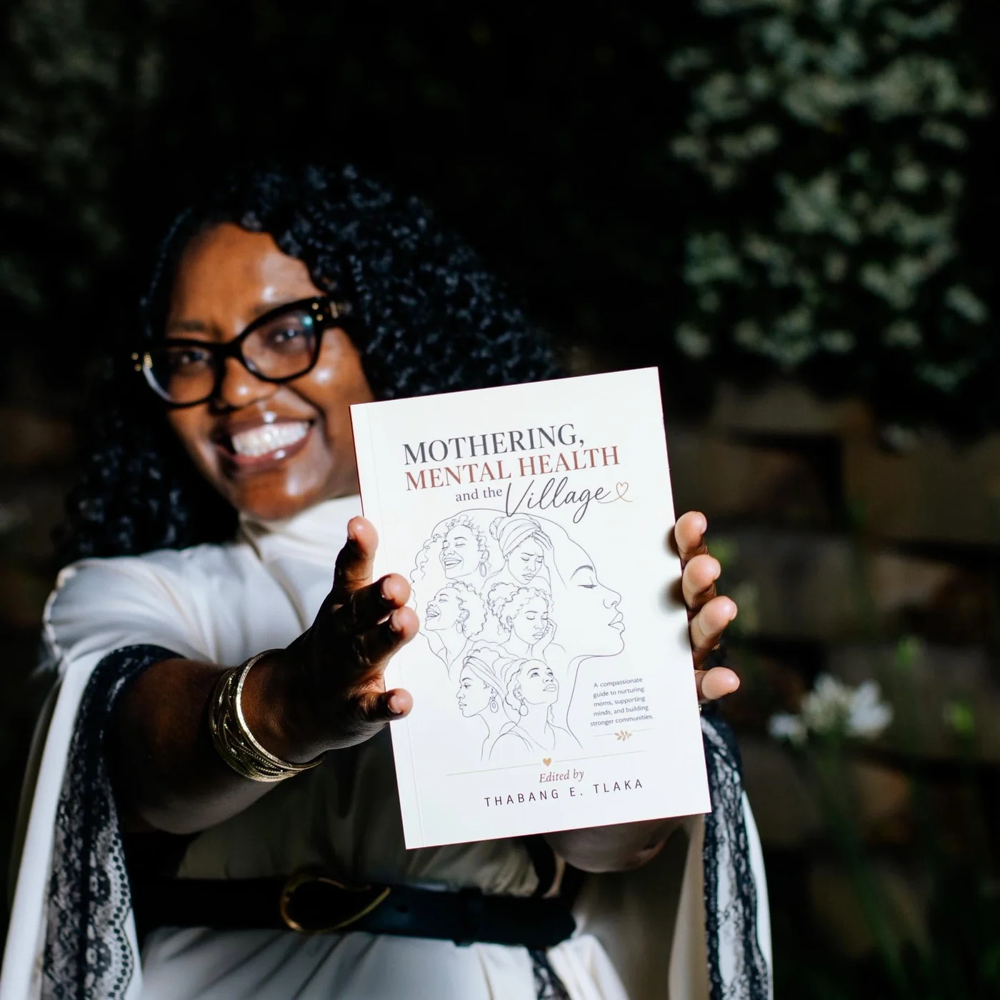

SPEAKING
Honest conversations that stay with people.
I speak about youth, mental health, confidence and mothering. You will find me on stages, in classrooms and on air.

✳ Words that make space for growth

Mothering & mental health ✳
AUTHORING JOURNEY
Mothering:
Mental Health
and the Village
Edited by Thabang LakaThe conversation goes beyond any one person. Cathy’s authoring journey opens space to talk about motherhood, mental health and the power of support.
ON AIR & IN CONVERSATION
Hear the conversation.
From parenting to relationships and emotional wellbeing, hear some of Cathy’s features in the media.
RADIO 2000
Relationship Tuesday
Life, Love & All
702
Relationship focus
The Clement Manyathela Show
NEWS
Supporting teens’ career choices
Germiston City News
LET’S CONNECT
Start a conversation that matters.
Tell me about your audience, your date and the conversation you want to start.
Book a speaking engagement